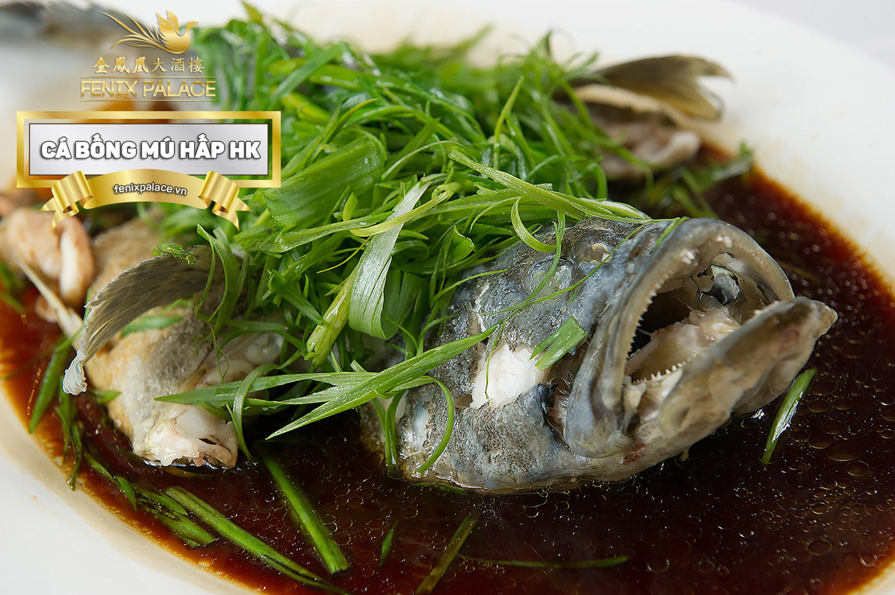

INGREDIENTS
1 con cá bóng mú (khoảng 600g)
1/2 lít nước dùng (nấu từ 500g xương heo + 50g củ hành tây + 50g hành lá + 50g ngò rí và 20g gừng,
nấu lửa nhỏ cho dậy mùi thơm,lược lấy nước trong)
Gia vị làm sốt Hồng Kông: 50ml nước tương, 20ml xì dầu,
10ml rượu trắng, 20g hạt nêm từ thịt, 10g đường trắng, 1/4 thìa cà phê muối
Gừng, đầu hành lá và ớt sừng, tất cả xắt sợi.
INSTRUCTIONS
Bước 1: cá, làm sạch, ướp với 1 thìa cà phê hạt nêm
từ thịt, rượu trắng và gừng.Cho cá vào xửng hấp
10 phút,đổ bỏ nước để khử mùi tanh.
Bước 2: Làm nước sốt cá hấp kiểu Hồng Kông:Dầu nóng,
cho gừng và hành lá vào phi thơm, cho nước dùng
xương heo vào chảo, rồi đến nước tương, xì
dầu, rượu trắng, hạt nêm từ thịt, đường và
muối, đợi cho sôi lại, tắt bếp.
Bước 3: Làm nóng khoảng 3 thìa súp dầu ăn rưới lên
mình cá, rồi cho nước sốt cá hấp Hồng Kông
lên, rắc gừng, hành lá và ớt thái sợi lên mình cá,
bắc cá lên lò, để lửa riu riu suốt bữa ăn.
Thưởng thức: Dùng nóng với cơm trắng. Dọn kèm với nước tương.

⇒To get more instructions. Please watch the guide video behind